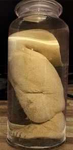
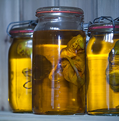

Ölü dokuların parçalanması ve korunması konusunda uzmanım. Hepimiz sevdiklerimizi kaybettik ve bu çok zor olabilir; fakat anılarının onlarla birlikte ölmesi gerekmez. Herhangi bir vücut parçasını, hatta bütün bir bedeni alıp senin için formaldehitle korur, onları her zaman hatırlatacak bir şeyin olması için sana geri gönderirim. Çocuğun, büyükanne veya büyükbaban, evcil hayvanın ya da başka bir şey olması fark etmez. İstediğin her şeyi korurum. Hizmetlerim; korumak istediğin parça için uygun kabın bulunmasını, gerekirse parçalamayı, asıl korumaişlemini ve geri gönderimi kapsar.
Her şeyi bana gönderip hatıranı aldıktan sonra yoluna devam etmek istersen kalanları saklamakta sorun görmem. Atma yüküyle uğraşmaman için kalıntılarla dilediğimi yaparım. Tamamen vazgeçmek zorunda değilsin. Onların bir parçasını daima yanında tutmana yardım edebilirim.
Çeşitli saygın akademilerde, görevleri hayvanların derisini yüzme, parçalama, koruma ve belgeleme üzerine yoğunlaşan bir teknisyen olarak uzun bir kariyer geçirdim. Parçalama ve korumaya duyduğum ilgi meslek hayatımla bağdaşmamaya başlayınca görevimden ayrıldım. Kısa süre sonra Avrupa Birliği formaldehit kullanımını yasakladı. Ben de tutkumu sürdürmek için kuralların daha gevşek olduğu bir bölgeye taşındım. Kendime ait geniş bir korunmuş numune koleksiyonum var; bu yüzden bir zamanlar canlı olan bir şeyin parçasını evinde bulundurmak istemenin ne anlama geldiğini anlıyorum.
Formaldehit dışında da koruma yöntemleri var ama onu estetik nedenlerle tercih ediyorum. Bedenin kırmızı tonu zamanla kaybolurken oluşan yumuşak renkler, korumanın güzelliğini yakaladığını düşündüğüm huzurlu ve hayaletimsi bir nitelik yaratıyor. Formaldehit kullanıldığında işlem oldukça basittir. Numune için uygun bir kap bulurum. Özel bir boyut ya da tür istersen ve onu bulabilirsem kullanırım. Ardından işlem başlayabilir.
Önce parçayı dezenfektan solüsyonla yıkar, ardından ölüm katılığını gidermek için kaslara masaj yaparım. Vücut sıvılarını çıkarıp yerlerine formaldehit koyarım. Sonra tüm organları delerek içlerindeki sıvı ve gazı boşaltır, içeriklerini formaldehitle değiştiririm. Parça daha sonra birkaç gün boyunca alkol oranı giderek artan çeşitli banyolarda bekletilir.
Son olarak kabı izopropil karışımla doldurur ve hatıranı içine batırırım.